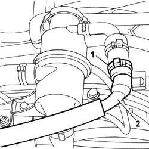
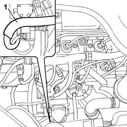
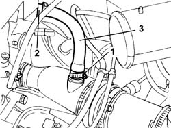

1080D14 PIPE FROM ENGINE OIL VAPOUR SEPARATOR TO INTAKE - R + R
- Path
- Procedures > 10 ENGINE UNIT > 1080 EXHAUST EMISSION CONTROL SYSTEM > 1080D CRANKCASE VAPOUR/GAS RECIRCULATION SYSTEM > 1080D14 PIPE FROM ENGINE OIL VAPOUR SEPARATOR TO INTAKE - R + R
- Kind
- repair procedure (removal / refitting; the operation number is the code)
- Applies to
- engines: 2.0 16V, 2.3 JTD 16V; all production periods
- Interactive page
- https://sloeber94.github.io/elrnDB-fDct/en/#/244000906
Applies to: engines: 2.0 16V; all production periods
 Removing
Removing
 Refitting
Refitting1. Open the pipe fastening band.
2. Release the pipe from the separator.

Applies to: engines: 2.0 16V; all production periods
1. Release the oil vapour pipe and remove it.

Applies to: engines: 2.0 16V; all production periods
Refitting
Removing- Place the pipe in position and restore the retaining bands.
Applies to: engines: 2.3 JTD 16V; all production periods
Removing
RefittingSee in Op. 1048A21
1. Disconnect the vapour pipe between the filter casing and the turbocharger from the air hose.
2. Disconnect the pipe from the connector under the rigid air supply pipe to the heat exchanger.
3. Remove the engine oil vapour pipe.

Applies to: engines: 2.3 JTD 16V; all production periods
Refitting
Removing- Fit the oil vapour pipe.
- Connect the pipe to the connector under the rigid air supply pipe to the heat exchanger.
- Connect the vapour pipe between the filter casing and the turbocharger to the air hose.
See in Op. 1048A21